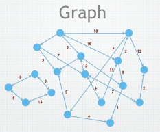

v.
Overview
- Pathfinding: what is it, why does it matters, applications
- Search algorithms: BFS, DFS, greedy algorithm, Dijkstra, A*
- Navigation Mesh: what is it, why is it better, examples
Pathfinding
Why Does It Matters?
- We have a graph
- - Nodes (points)
- Edges (lines between Nodes, with a length - - Nodes (points)
- E.g. a road map
- - Nodes = addresses
- Edges = roads - - Nodes = addresses
- E.g. a tile-based 2D game
- - Nodes = grid/tiles
- Edges = connections between adjacent grids - - Nodes = grid/tiles
- Given two nodes $A$ and $B$, find the shortest path from $A$ to $B$
- "Shortest" in terms of edge lengths $\text{---}$ could be distance, time, fuel cost, or any other assigned weights, ...
Applications of Pathfinding: Map
cost reduction
time saving
Applications of Pathfinding: Maze
space exploration
obstacle detection
Applications of Pathfinding: Chip Design
design checking
minimising wirelength
avoid obstacles
multi-layer routing
Applications of Pathfinding: Strategy Game
source: https://www.codeofhonor.com/blog/wp-content/uploads/2013/02/Warcraft2.jpg
obstacle detection
Applications of Pathfinding: Real-Time Game
source: https://images-na.ssl-images-amazon.com/images/I/B1ge3jx6AeS.jpg
navigation
obstacle detection
Searching Algorithms
Pathfinding as a Search Problem
- The idea: build a spanning tree for the graph
- Root node is the starting node ($A$)
- Edges in the tree are the subset of edges of the graph
- As long as the tree includes $B$, a path has been found from $A$ to $B$
- Keep track of two sets of nodes:
- Open set: nodes within 1 edge of the tree that can be added next
- Closed set: nodes that have been added to the tree and shouldn't be revisited to avoid infinite loop
Graph Traversal
- Breadth-first Search (BFS) or Depth-first Search (DFS)
- Can be implemented with the open set as a queue (FIFO) or a stack (LIFO or FILO)
- Inefficient - generally has to explore the entire map
- Finds a path, but probably not the shortest
- Third type of traversal: best-first search
- "Best" according to some heuristic evaluation
- Often implemented with the open set as a priority queue - a data structure optimised for finding the highest priority item (or lowest in reversed order)
BFS vs. DFS

What can you find from this illustration (esp. DFS)?
source: https://miro.medium.com/v2/resize:fit:1400/1*xtwZnK6KCMX5pkAdd4pS3A.jpeg
source: https://dev-to-uploads.s3.amazonaws.com/i/e2ru41fjhqs4ombbcedf.png
Greedy Best-First Algorithm
- Always try to move closer to the goal $\qquad\qquad\qquad\qquad\qquad\qquad$
- Visit the node whose
distance to
the goal is minimal- e.g. Euclidean distance $\sqrt{x^2+y^2}$
(straight line distance in 2D space) - e.g. Euclidean distance $\sqrt{x^2+y^2}$
- Doesn't handle dead ends well
- Not guaranteed to find the
shortest path - May be trapped in local optimal solution

$\qquad\qquad\qquad\qquad\qquad\qquad\qquad$ Greedy Algorithm for Largest Reward
https://upload.wikimedia.org/wikipedia/commons/8/8c/Greedy-search-path-example.gif
Dijkstra's/ˈdaɪkstrəz/ Algorithm
- Let $g(x)$ be the sum of edge weights of the $\qquad \qquad \qquad \qquad \qquad$
path found from the start node to $x$ - Choose a node that minimises $g(x)$
- Guaranteed to find the shortest path
- ... but it is not the most efficient algorithm
for doing so

source: https://upload.wikimedia.org/wikipedia/commons/2/23/Dijkstras_progress_animation.gif
Dijkstra's Algorithm Pseudocode
function Dijkstra(Graph, source):
for each vertex v in Graph.Vertices:
dist[v] ← INFINITY
prev[v] ← UNDEFINED
add v to Q
dist[source] ← 0
while Q is not empty:
u ← vertex in Q with min dist[u]
remove u from Q
for each neighbour v of u still in Q:
alt ← dist[u] + Graph.Edges(u, v)
if alt < dist[v]:
dist[v] ← alt
prev[v] ← u
return dist[], prev[]
$A^*$ Search
- Let $g(x)$ be the distance of the path found $\qquad \qquad \qquad \qquad \qquad$
from the start node to $x$ (as in Dijkstra's
Algorithm) - Let $h(x)$ be an estimate of the distance from
$x$ to the goal (as in greedy search) - $A^*$ chooses a node that minimises the function
$f(x)$ $=$ $g(x)$ $+$ $h(x)$- $g(x)$: cost we know already
- $h(x)$: cost we guess to goal
- $A^*$ is faster than Dijkstra's Algorithm as it visited 'less' nodes in the graph

source: https://upload.wikimedia.org/wikipedia/commons/5/5d/Astar_progress_animation.gif
$A^*$ Pseudocode
function A_star(Graph, s, e):
for each vertex v in Graph.Vertices:
gScore[v] ← INFINITY
fScore[v] ← INFINITY
prev[v] ← UNDEFINED
openSet ← {s}
closedSet ← {}
gScore[s] ← 0
fScore[s] ← h(s)
while openSet is not empty:
u ← vertex in openSet with min fScore[u]
if u is e:
return gScore[], fScore[], prev[]
openSet.remove(u)
for each neighbour v of u:
temp_gScore ← gScore[u] + dist(u,v)
if temp_gScore < gScore[v]:
prev[v] ← u
gScore[v] ← temp_gScore
fScore[v] ← temp_gScore + h(v)
if v not in openSet:
add v to openSet
Properties of $A^*$ Search
- $A^*$ is guaranteed to find the shortest path if the estimate $h(x)$ is admissible
- Essentially, admissible means it must be an underestimate
- e.g. Euclidean distance is clearly an underestimate for actual distance
- $h(x)$ is a heuristic
- - In AI, a heuristic is an estimate based on human intuition
- Heuristics are often used to prioritise search, i.e. explore the most promising options first - - In AI, a heuristic is an estimate based on human intuition
- The more accurate $h(x)$ is, the more efficient the search
- $h(x)$ $=0$ gives Dijkstra's algorithm $\big($recall: $f(x)=g(x)+h(x)\big)$
Tweaking $A^*$ Search
- Can change how $h(x)$ is calculated
- - increased movement cost for rough terrain, water, lava, ...
- penalty for changing direction - - increased movement cost for rough terrain, water, lava, ...
- Different $h(x)$ can lead to different paths (if there are multiple "shortest" paths)
String Pulling
- Paths restricted to edges can look unnatural
- Intuition: visualise the path as a string,
then pull both ends to make it taut - Simple algorithm:
- - Found path is $p_0,p_1,\cdots,p_n$
- If the line from $p_i$ to $p_{i+2}$ is unobstructed, remove point $p_{i+1}$
- Repeat until there are no more points that can be removed - - Found path is $p_0,p_1,\cdots,p_n$

source: http://idm-lab.org/bib/abstracts/papers/socs20c.pdf
Pathfinding in Video Games
- $A^*$ works on any graph
- One of the most, if not THE most used algorithm in game dev today
- In many cases, it's the best choice
- But what if the game world is not a graph?
- E.g. complex 3D environments
- Requires a proper map representation
Waypoint Navigation
source: https://forum.treeofsavior.com/uploads/default/original/3X/0/4/04f1bb7b935d91cf3cb2700ed19c543e7d62b0da.png
- Manually place graph nodes in the world
- Place them at key points
- e.g. in doorways, around obstacles
- Works, but...
- More work for level designers
- Requires lots of testing and tweaking to get natural-looking results
- No good for dynamic environments
Visibility Graph
- Visible: the line connecting two points doesn't intersect with any obstacles
- Connecting each pair of obstacle corners is computational heavy
- Maps with $N$ corners (vertices) results up to $N^2$ edges
- Nightmare for big maps with more open areas and long corridors
source: https://theory.stanford.edu/~amitp/GameProgramming/polygon-unmanageable.png
Navigation Mesh
- Automatically generate navigation graph
from level geometry - Basic idea:
- - Filter level geometry to those
polygons (mesh) which are passable (i.e. floors, not walls/ceilings/obstacles)
- generate graph from polygons - - Filter level geometry to those
Meshes to Graphs
How to construct a graph from this mesh?
source: https://theory.stanford.edu/~amitp/GameProgramming/polygon-navmesh-plain.png
Meshes to Graphs: Polygon Centres
Green: ideal path, Blue: pathfinder result
source: https://theory.stanford.edu/~amitp/GameProgramming/polygon-navmesh-faces.png
unnatural path will be returned in triangular mesh
source: https://i.stack.imgur.com/3GGXL.gif
Meshes to Graphs: Edge Centres

Green: ideal path, Blue: pathfinder result
source: https://theory.stanford.edu/~amitp/GameProgramming/polygon-navmesh-edges.png
Similar problem in triangular mesh
source: https://i.stack.imgur.com/n71XD.gif
Meshes to Graphs: Polygon Vertices
Green: ideal path, Blue: pathfinder result
source: https://theory.stanford.edu/~amitp/GameProgramming/polygon-navmesh-vertices.png
Meshes to Graphs: Hybrid Method
Green: ideal path, Blue: pathfinder result
source: https://theory.stanford.edu/~amitp/GameProgramming/polygon-navmesh-edges-and-vertices.png
Following the Path
- Funnel Algorithm: like string pulling but for navigation meshes
- http://digestingduck.blogspot.com/2010/03/simple-stupid-funnel-algorithm.html
http://ahamnett.blogspot.com/2012/10/funnel-algorithm.html - http://digestingduck.blogspot.com/2010/03/simple-stupid-funnel-algorithm.html
- Steering: Your AI agent doesn't follow the path exactly, but tries to stay close to it
- Dynamic environment: may need to re-run pathfinder if environment changes (e.g. movable obstacles, destructible terrain)
Funnel reference: https://gamedev.stackexchange.com/questions/68302/how-does-the-simple-stupid-funnel-algorithm-work
Review
- Pathfinding and why it matters
- BFS
- FIFO: utilise
queuesstructure, expand the shallowest node - Complete: always finds a solution, if one exists
- Optimal: finds the best solution if all actions have the same cost
- FIFO: utilise
- DFS
- LIFO/FILO: utilise
stackdata structure, expand the deepest node - Not complete: might never find a solution, if map is infinite
- Not optimal: returned solution is rarely the best one
- LIFO/FILO: utilise
Review (cont.)
- GBFS
- Heuristic: uses heuristic function to guide search
- Complete: always finds a solution, if one exists
- Not optimal: returned solution is rarely the best one
- Dijkstra's Algorithm
- Weighted graph: like BFS, but for actions have different costs
- Complete: always finds a solution, if one exists
- Optimal: finds the best solution
- A* Algorithm
- Weighted graph: like Dijkstra's but adds an estimate of the remaining path
- Complete: always finds a solution, if one exists
- Optimal: finds the best solution
Questions?